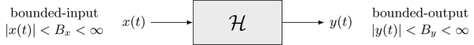

System Properties#
SYSTEM MEMORY#
A system is memoryless (e.g., static) if for any time t=t1, the value of the output at time t1 depends only on the value of the input at time t=t1. In other words, the value of the output signal depends only on the present value of the input signal. What must the impulse response look like if a system is memoryless?
Memoryless System and Impulse Response#
For a system to be memoryless, the output at any time \( t_1 \) must depend only on the input at the same time \( t_1 \). This implies that the impulse response \( h(t) \) must satisfy the following property:
In other words, the impulse response \( h(t) \) can only have a nonzero value at \( t = 0 \). Mathematically, this is expressed as:
where:
\( \delta(t) \) is the Dirac delta function, representing an impulse at \( t = 0 \),
\( k \) is a constant that represents the proportionality factor.
Reasoning#
When the input to the system is \( x(t) \), the output \( y(t) \) is given by the convolution of \( x(t) \) and \( h(t) \):
For the system to be memoryless:
The output \( y(t) \) must depend only on the value of the input \( x(t) \) at the same instant \( t \).
This is achieved only if \( h(t-\tau) \) is zero for all \( \tau \neq t \), which occurs when \( h(t) = k\delta(t) \).
Conclusion#
The impulse response of a memoryless system must be:
This ensures the system’s output depends solely on the present value of the input.
Invertibility and Inverse Systems#
If a system has a unique relationship between its input and output, the system is called the invertible system. In other words, a system is said to be an invertible system only if an inverse system exists which when cascaded with the original system produces an output equal to the input of the first system. The block diagram representation of an invertible system is shown in Figure So, system is invertible if the input \( x(t) \) can be uniquely recovered from the output \( y(t) \). This is crucial in applications such as communication systems, where signal recovery (e.g., echo cancellation) is required.
System and Impulse Response#
The relationship between input \( x(t) \), output \( y(t) \), and the system’s impulse response \( h(t) \) is:
For the system to be invertible, there must exist an inverse system with impulse response \( h^{-1}(t) \) such that:
Finding the Inverse Impulse Response#
To recover \( x(t) \), the combined system must behave as an identity system, with impulse response \( \delta(t) \):
Example: Memoryless System#
For a memoryless system, the impulse response is:
where \( k \) is a constant. To find \( h^{-1}(t) \), we solve:
Using the property of convolution with \( \delta(t) \):
Dividing through by \( k \) (assuming \( k \neq 0 \)):
Conclusion#
For a memoryless system with impulse response \( h(t) = k \delta(t) \), the inverse impulse response is:
This ensures the system is invertible, allowing the recovery of the input \( x(t) \) from the output \( y(t) \).
Finding the Inverse System Without \( z \)-Transform or Fourier/Laplace Transform#
1. Discrete-Time System#
The output of a discrete-time system is given by:
where:
\( h[k] \) is the impulse response of the system,
\( x[n] \) is the input,
\( y[n] \) is the output.
For the system to be invertible, the convolution of \( h[k] \) and the inverse impulse response \( h^{-1}[k] \) must satisfy:
where \( \delta[k] \) is the discrete unit impulse function.
Example 1: Memoryless System#
If \( h[k] = c\delta[k] \), the convolution becomes:
Using the properties of the delta function, this simplifies to:
Thus, the inverse impulse response is:
Example 2: FIR System#
Suppose \( h[k] = [1, -a] \), meaning \( h[k] = \delta[k] - a\delta[k-1] \). The convolution equation becomes:
Expanding the convolution:
This is a recurrence relation that can be solved step-by-step to determine \( h^{-1}[k] \).
2. Continuous-Time System#
The output of a continuous-time system is given by:
For the system to be invertible, the convolution of \( h(t) \) and the inverse impulse response \( h^{-1}(t) \) must satisfy:
where \( \delta(t) \) is the Dirac delta function.
Example 1: Memoryless System#
If \( h(t) = c\delta(t) \), the convolution becomes:
Using the sifting property of the delta function:
Thus, the inverse impulse response is:
Example 2: Exponential System#
Suppose \( h(t) = e^{-at} u(t) \), where \( u(t) \) is the unit step function. The convolution equation is:
Assume \( h^{-1}(t) = e^{bt} u(t) \) (a similar form as \( h(t) \)). Substitute this into the integral:
Simplify:
This implies \( b = -a \), so the inverse impulse response is:
Example: Finding the Inverse System for \( h[n] = [1, -2, 0, 1, 3]u[n] \)#
To find the inverse system \( h^{-1}[n] \), we solve the equation:
where \( \delta[n] \) is the discrete unit impulse function.
Step-by-Step Solution#
1. Impulse Response#
The given \( h[n] = [1, -2, 0, 1, 3]u[n] \) can be written as:
2. Convolution Equation#
The convolution of \( h[n] \) and \( h^{-1}[n] \) is:
Assume \( h^{-1}[n] = [a_0, a_1, a_2, a_3, a_4]u[n] \), where \( a_0, a_1, \dots, a_4 \) are the coefficients to be determined.
3. Solve for \( h^{-1}[n] \)#
For \( n = 0 \):#
For \( n = 1 \):#
For \( n = 2 \):#
For \( n = 3 \):#
For \( n = 4 \):#
4. Final Result#
The inverse impulse response is:
Causality#
The principle of causality states that an effect temporally has to follow its cause. A systems may violate this fundamental principle which limits its practical realization. Causality is hence an important aspect for the practical realization of systems. Conditions for causal linear time-invariant (LTI) systems for both the impulse response as well as the transfer function are derived in this section.
Condition for the Impulse Response#
The output signal \(y(t) = \mathcal{H} \{ x(t) \}\) of an LTI system is given by convolving the input signal \(x(t)\) with its impulse response \(h(t)\)
Analyzing the first integral reveals that the computation of the output signal \(y(t)\) for some time instant \(t=t_0\) requires knowledge of the input signal for all time instants. This includes also future time instants \(t > t_0\). While this does not pose a problem for signals and impulse responses given in closed-form, this is not feasible in practice. Without imposing further restrictions, this would require the knowledge of the input signal for all future time instances.
Causality is not violated if we modify the integration limits of the convolution integral
Now the output signal \(y(t)\) for a given time instant \(t=t_0\) depends only on the input signal \(x(t)\) for \(t \leq t_0\). Comparing the second equality with the second equality of the original convolution integral yields that the modified integration limits are equal to the assumption that \(h(t) = 0\) for \(t < 0\).
A system is termed causal system iff its impulse response \(h(t)\) is a causal signal
Only causal systems can be realized practically due to above reasoning.
Stability#
The stability of a system can be evaluated with respect to various different criteria. The most common ones are Lyapunov stability and bounded-input bounded-output stability. The latter is introduced in the following.
Stability of a System: BIBO (Bounded-Input Bounded-Output) Stability#
A system is BIBO Stable if and only if every bounded input yields a bounded output.
Definition#
A system is stable if and only if:
For every input \( x[n] \) such that there exists some finite \( A \) satisfying:
\[ |x[n]| \leq B_x \quad \text{for all } n, \]The corresponding output \( y[n] \) satisfies:
\[ |y[n]| \leq B_y \quad \text{for all } n, \]for some finite \( B_y \).
Stability and Impulse Response#
In terms of the impulse response, a discrete-time system is BIBO stable if:
where \( h[n] \) is the impulse response of the system.
Example of a Stable System#
Given System#
The system is described by:
Analysis of Stability#
Assume \( |x[n]| \leq A \) for all \( n \), where \( A \) is finite.
The corresponding output is:
\[ |y[n]| = 10,000 |x[n]|^2. \]Since \( |x[n]| \leq A \), we have:
\[ |y[n]| \leq 10,000 A^2. \]Since \( 10,000A^2 \) is finite for any finite \( A \), the system is stable.
Stability in Terms of Impulse Response#
For linear time-invariant (LTI) systems, the output is given by the convolution of the input \( x[n] \) with the impulse response \( h[n] \):
If the input \( x[n] \) is bounded (\( |x[n]| \leq A \)), the output \( y[n] \) will also be bounded if:
The BIBO criterion is illustrated in the following

Condition for the Impulse Response#
In order to derive a condition for the impulse response \(h(t)\) of an LTI system that conforms to the BIBO criterion, the magnitude of the output signal \(y(t)\) is expressed by convolving the input signal \(x(t)\) with the impulse response
An upper bound for the magnitude of the output signal is found by applying the triangle inequality together with the upper bound for \(|x(t)|\)
Since the output signal \(|y(t)|\) shall be bounded, it can be concluded that the impulse response needs to be an absolutely integrable function
where \(B_h < \infty\) denotes a constant finite bound.
An LTI system is stable in the sense of the BIBO stability criterion iff its impulse response is absolutely integrable. Since absolute integrability of a signal is sufficient for the existence of its Fourier transform, this implies that the transfer function \(H(j \omega) = \mathcal{F} \{ h(t) \}\) exists for stable systems.
Example of an Unstable System#
Given System#
The system is described by:
where \( * \) denotes the convolution operation, and \( u[n] \) is the unit step function.
Proving the System is Unstable#
A system is unstable if there exists at least one bounded input \( x[n] \) that produces an unbounded output \( y[n] \).
Input Example:#
Let \( x[n] = u[n] \), where \( u[n] \) is the unit step function. Clearly:
so \( x[n] \) is bounded.
Output:#
The output \( y[n] \) is given by the convolution of \( x[n] \) and \( u[n] \):
Since \( x[n] = u[n] \), the output becomes:
Thus:
Conclusion:#
The output \( y[n] = (n + 1)u[n] \) grows without bound as \( n \to \infty \). Therefore, the system is unstable.
Key Insight:#
The system fails the BIBO stability criterion because a bounded input (\( x[n] = u[n] \)) produces an unbounded output (\( y[n] = (n + 1)u[n] \)).
Realizability#
A system is said to be realizable if it is a causal and stable system. Realizability is a prerequisite for the practical implementation of systems. Causality implies that the impulse response \(h(t)\) of the system has to be a causal signal.